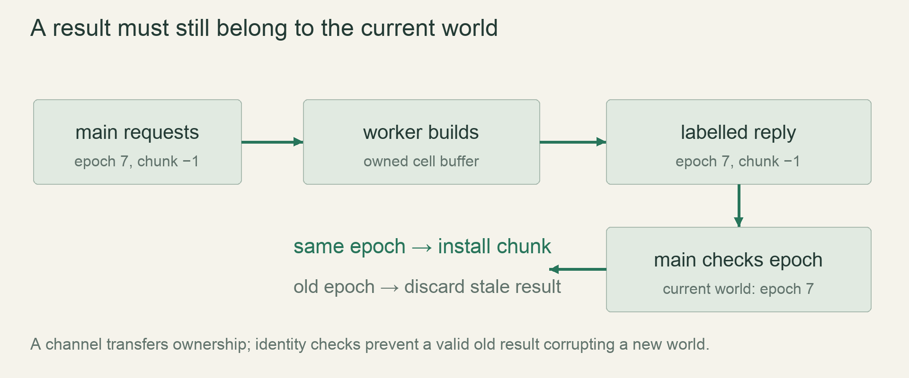

M4 / A persistent worldLesson 72 of 100 · ~5 min reading + build time
Transfer background jobs with channels
Move a labelled owned result from a worker to the main thread using a bounded channel.
Previously: Place contained lakes caves and features. Keep that working result available before starting this lesson.
Why we need this now
Generation and disk work should not freeze drawing, but letting a worker mutate the live world makes ownership and timing harder. A message lets one owner finish work and transfer the result at a controlled point.
Your result: Move a labelled owned result from a worker to the main thread using a bounded channel.

01Discover the ownership boundary
The main loop owns the live world. A worker owns a request while processing it, then owns the produced data. Sending a message transfers that data; receiving it gives the main loop the opportunity to install it. The worker does not need a permanent mutable reference to the whole world.
Start with one labelled result rather than a full threaded loader. If you cannot point to the owner before and after send, pause here and revisit moves. A String or Vec in a sent message moves; a small Copy identifier behaves differently.
02Bound the queue before making it fast
An unbounded channel can accumulate work faster than a slow disk or generator finishes it. A sync_channel with a finite capacity applies backpressure. Blocking send is acceptable inside a worker, but a full request queue must not block the rendering thread. For main-loop requests, use a nonblocking send policy or cap outstanding requests.
A capacity of two in the experiment is an instructional limit, not a tuned game value. Measure queue depth and memory in production. A camera flying across terrain should not enqueue every obsolete intermediate chunk forever.
03Reject stale results by identity
A result needs both its chunk coordinates and the world/request generation it belongs to. Imagine loading world A, requesting chunk (0,0), then switching to world B before the worker replies. Coordinates alone match, but installing A’s data into B corrupts the new world.
Compare a world epoch or request token when receiving. Discard or cache stale results according to an explicit policy. This is a correctness condition even with a perfectly reliable channel and no data races.
04Receive without freezing the frame
The complete example uses recv once because a terminal demo has nothing to draw while waiting. In the game use try_recv in a bounded drain loop, stopping after a message/time allowance. An empty queue is not an error requiring a panic. Disconnection means all relevant senders have gone away; decide how to surface worker failure.
Keep a JoinHandle and define shutdown: stop accepting work, drop request senders, let the worker exit or cancel cooperatively, then join. A thread does not automatically stop because the camera no longer needs its result.
Read → predict → run → change
Walk through the working example
Complete focused experiment — save as examples/lesson_072.rs, then run cargo run --example lesson_072 from game/.
Download this worked example ↧
use std::sync::mpsc::sync_channel;
use std::thread;
#[derive(Debug)]
struct ChunkReply { epoch: u64, x: i32, cells: Vec<u8> }
fn main() {
let (tx, rx) = sync_channel(2);
let worker = thread::spawn(move || {
let reply = ChunkReply { epoch: 7, x: -1, cells: vec![0; 4096] };
tx.send(reply).expect("demo receiver exists");
});
let live_epoch = 7;
let reply = rx.recv().expect("demo worker sends one reply");
if reply.epoch == live_epoch {
println!("install chunk {} with {} cells", reply.x, reply.cells.len());
}
worker.join().expect("demo worker completes");
}Read what each part does
- move transfers the sender into the worker closure; it does not borrow the main stack indefinitely.
- The payload vector is moved through the message. No second mutable alias to those cells is created.
- expect is used to make a tiny controlled experiment fail loudly; production handles disconnects through Result.
Expected result
install chunk -1 with 4096 cellsExact version numbers, paths and compiler wording may differ. Compare the behavior and file locations, not incidental output formatting.
Prediction · repair · transfer
Exercises you actually do
Write a prediction or make an attempt before opening a solution. Use the hint if stuck; then compare reasoning and verify with the stated check. A different implementation is fine when it satisfies the same contract.
Reject the wrong world
Change live_epoch to 8. What should be installed?
Need a hint?
Do not change the reply to make the test pass.
Worked solution
Nothing is installed because reply epoch 7 does not match live epoch 8. Add an explicit stale-result counter and assert it increments.
How to verify your result
No chunk data from the previous world enters the current map.
Protect the frame loop
Replace the terminal waiting receive with a game-loop-friendly receive strategy.
Need a hint?
An empty queue is normal between completed jobs.
Worked solution
Use try_recv; handle Ok(reply), Empty by stopping this frame’s drain, and Disconnected by reporting worker status. Bound the number of replies installed per frame.
How to verify your result
An empty queue returns control immediately.
Explain backpressure
A worker sends three replies to capacity two without a receiver draining. Where does it wait?
Need a hint?
Count queued messages, not total sends.
Worked solution
The first two replies fill the queue. A blocking third send waits until capacity is available or the receiver disconnects. Never perform that blocking path on the drawing thread.
How to verify your result
A small controlled test demonstrates blocking or uses try_send to observe Full.
When it goes wrong
Start with the observed symptom. Change one assumption at a time instead of pasting fixes until the error disappears.
Window stops while loading
What is happening: Main loop called recv or blocking send.
Try this: Use nonblocking main-loop queue operations and bounded work.
Old terrain appears after loading another world
What is happening: Replies are checked only by chunk coordinates.
Try this: Include and compare a world/request epoch.
Application never exits
What is happening: A sender remains alive or the worker has no shutdown condition.
Try this: Drop request senders deliberately and join workers once their loop can terminate.
Explain it without the example
Why is moving an owned result through a channel useful for chunk loading?
Reasoning to compare
The worker no longer needs concurrent mutable access to the live world. The main thread decides when a completed result may enter current state.
Self-check only: test a prediction or ask your tutor if anything still feels arbitrary.
For your YouTube series
Turn the lesson into an episode
Open with the problem or result
Pan away before generation finishes: should the old result still enter the world?
Teach in this order
- Make the ownership transfer visible
- Send one small payload
- Force a stale epoch
- Bound a queue
- Replace waiting with nonblocking draining
Record this demonstration
Show a debug counter accepting current replies and rejecting an old-world reply.
Close with what the viewer can now explain
Channels transfer ownership; identities decide whether a completed result is still relevant.
A lesson can span several recordings. The episode beats are a teaching outline, not a claim that every viewer learns at the same speed.
Finish with evidence
A stale result cannot replace the current world’s chunk. Queue growth and shutdown are tested.
Make one small variation without copying: predict it, run it and explain any difference. On another day, repeat one exercise from memory before starting the next lesson. Ask your tutor about any step you can execute but cannot explain.
This is an attempt marker, not a grade. Learning records are written only after demonstrated understanding.
Primary sources for this lesson
Use sources to verify the mechanism. The lesson itself supplies the instructions; the links are not a substitute for teaching them.